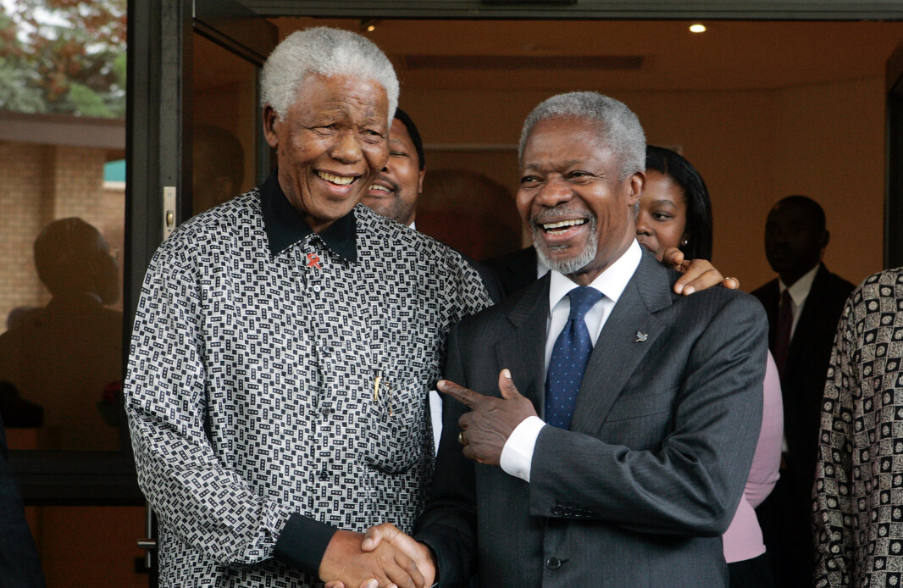

Kofi Annan
The Peacekeeper

Kofi Annan (right) greeting Nelson Mandela (left).
Timeline of Kofi Annan's Life
- 1938 - Born in Kumasi, Ghana.
- 1954 - Attended Mfantsipim School in Cape Coast.
- 1958 - Annan began studying economics at the Kumasi College of Science and Technology.
- 1961 - Gets his undergraduate degree from Macalester College in St. Paul, Minnesota
- 1962 - Kofi Annan started working as a Budget Officer for the World Health Organization.
- 1971 - Earned his masters of science degree.
- 1974 - He worked as the Director of Tourism in Ghana.
- 1987 - Annan returned to work for the UN.
- 1994 - The Rwandan Genocide took place in 1994 while Annan directed UN Peacekeeping Operations.
- 1997 - Annan was named Secretary-General of the U.N.
- 1997 - A comprehensive reform agenda was issued on 14 July 1997 entitled ‘Renewing the United Nations: A Programme for Reform.
- 2001 - Annan issues a five-point "Call to Action" to address the HIV/AIDS pandemic.
- 2001 - Annan and the United Nations were jointly awarded the Nobel Peace Prize.
- 2003 - Annan called on the United States and the United Kingdom not to invade without the support of the United Nations in 2003.
- 2006 - He retired from the UN after two terms as Secratary-General
- 2007 - Annan was named chairman of the prize committee for the Mo Ibrahim Prize for Achievement in African Leadership, was chosen to lead the new formation of Alliance for a Green Revolution in Africa (AGRA), became a member of the Global Elders, was appointed president of the Global Humanitarian Forum in Geneva, and was selected for the MacArthur Foundation Award for International Justice.
- 2008 - As head of the Panel of Eminent African Personalities, Annan participated in the negotiations to end the civil unrest in Kenya.
- 2008 - Kofi Annan was appointed the Chancellor of the University of Ghana in 2008.
- 2008 - Annan managed to have President Mwai Kibaki and Raila Odinga sign a coalition government agreement and was widely lauded by many Kenyans for this landmark achievement.
- 2008 - Creates Kofi Annan Foundation dedicated to sustainable development and peace.
- 2018 - Dies aged 80.
You can read more about Kofi Annan here